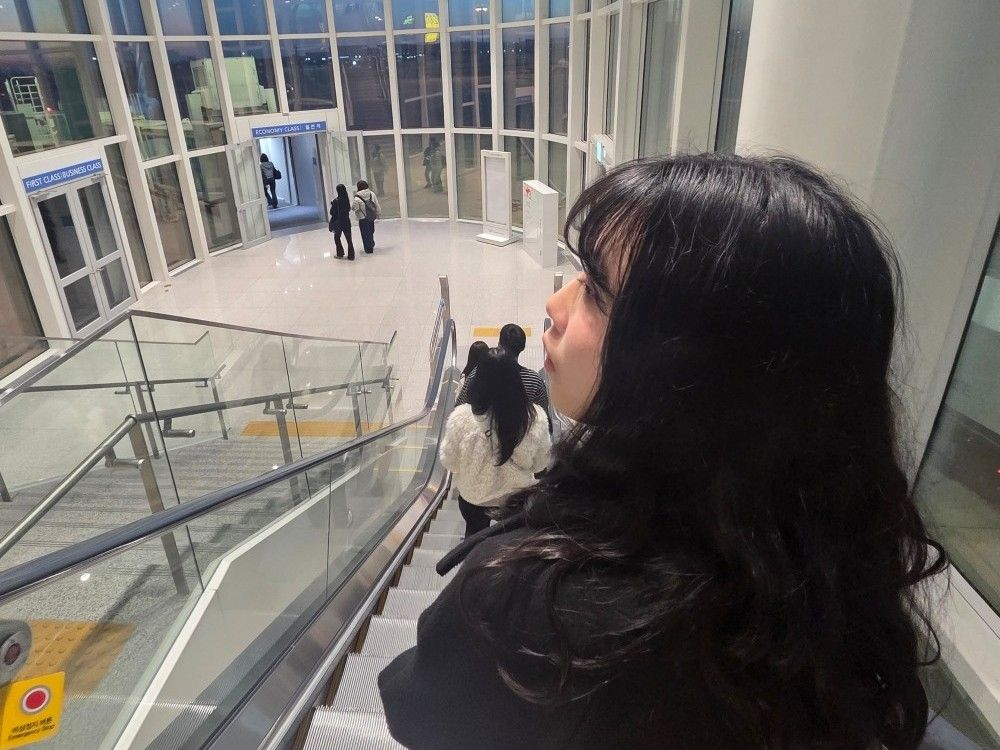
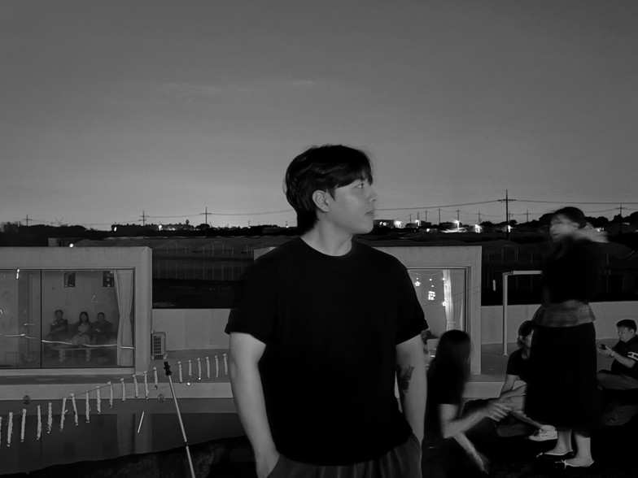

Récit
Narrative & Vision
Director of Vision
Minju Kim
An observer who finds beauty in the hidden frames of diverse film genres, connecting mundane moments like a film strip. Her work translates the quiet stillness of daily existence into a visual language that speaks of unspoken emotions and cinematic timing.
View Portfolio

Visual Archivist
Kyungjae Mun
A traveler who has traversed various regions and countries, recording every landscape as a single scene from a movie, where the horizon meets the lens. His archive is a testament to the scale of nature and the intimacy of discovery.
Explore Journeys"Capturing moments where daily life becomes a movie. Beyond simply recording travel destinations, we capture food and places as a single narrative by adding cinematic mise-en-scène."
The Cinematic Philosophy